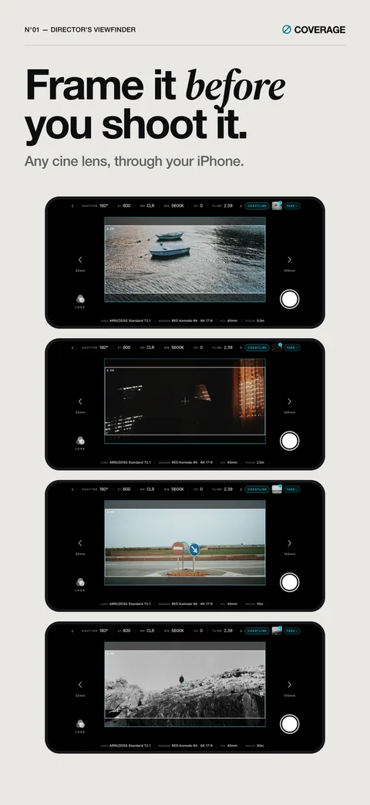
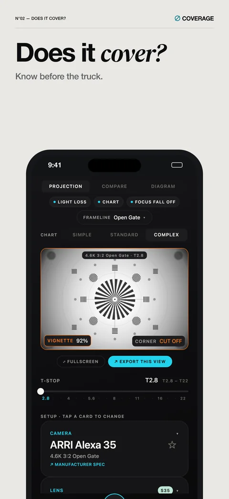
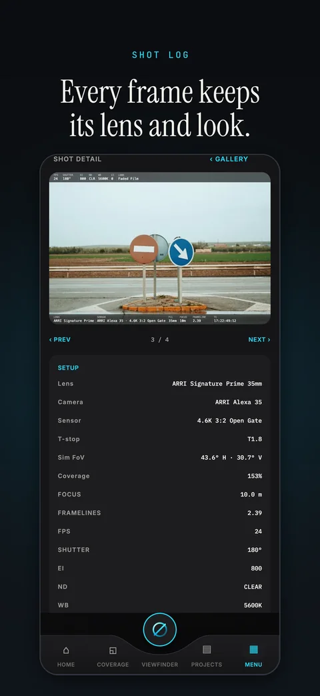
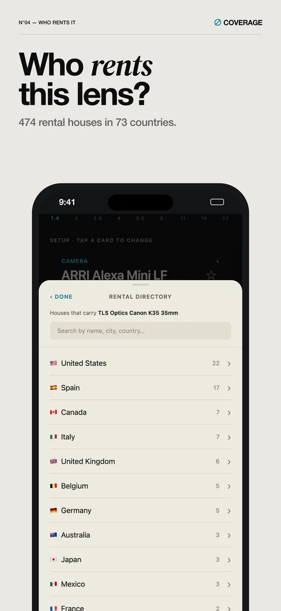
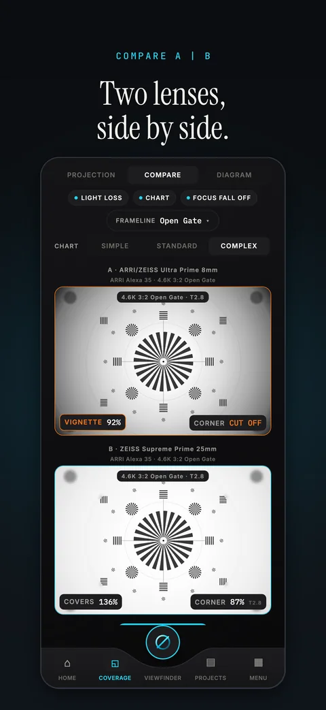
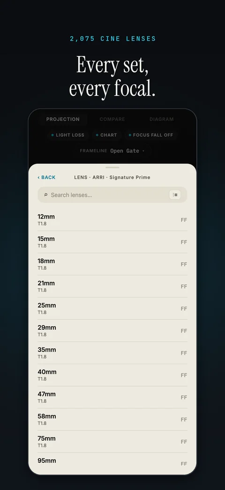
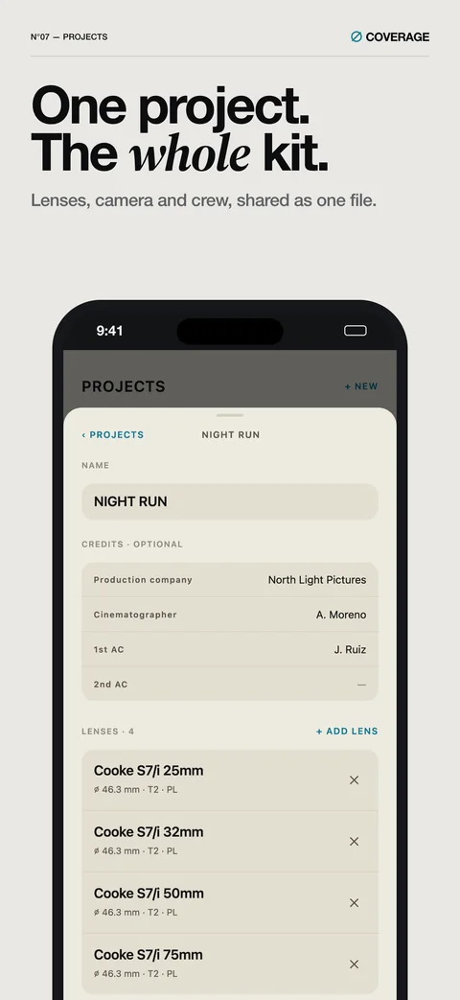
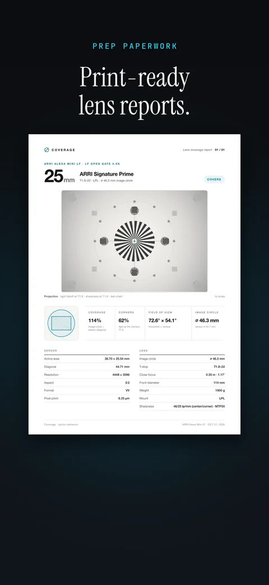
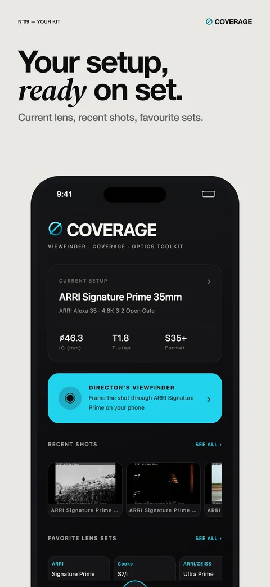

Any lens on any sensor
The image circle drawn to scale over the exact sensor mode, with light falloff at the T-stop you set and a warning when the corners vignette.
Frame it before you shoot it.
The camera department's field kit for iPhone. Put any cine lens on any sensor, see its coverage, falloff and framing, take it to set through a director's viewfinder on your phone, and find who rents it.
Out on the App Store · 3 November 2026iPhone7-day trial, then one purchase
Coverage is an iPhone app for the camera department. Pick a camera, a sensor mode and a lens, and it draws the image circle that lens throws onto that sensor, to scale, with light falloff and a warning when the corners vignette. The catalog holds 2,408 cine lenses, 73 camera bodies and 759 sensor modes.
On set, the director's viewfinder zooms the phone's cameras to the cine lens's field of view and draws framelines and camera settings over the live image. Stills and clips are saved with the lens, framelines, camera settings, tilt, compass heading and GPS. Every lens page lists the rental houses that carry it: 474 in 73 countries.
Coverage is made by Daniel Ocanto Hernandez, an independent developer. It is out on the App Store on 3 November 2026.
The image circle drawn to scale over the exact sensor mode, with light falloff at the T-stop you set and a warning when the corners vignette.
Two lenses on one camera, or one lens on two cameras, with the specs in two columns, row for row.
The phone's cameras zoom to the cine lens's field of view, with framelines, a camera-settings HUD and looks (LUTs) over the live image.
Stills and clips save with the lens, framelines, camera settings, tilt, compass heading and GPS. Export them as a shot-list PDF.
Camera, sensor mode, lens list and crew credits together, shared as a single file.
A4 reports for a lens, a set or a project, and landscape A|B comparison sheets.
474 rental houses in 73 countries, listed lens by lens, with their websites and contact details.
MTF and lens data exported as a Nuke .nk file and CSV.
Nine PNGs at 1320 × 2868, the set used on the App Store. Each one opens the full-size file.









iPhone captures through the viewfinder, with a 2.39 frameline. They show framing, not a particular lens's look. PNG, 2000 × 920.
Please use them as supplied: no recolouring, cropping or added effects.
Daniel Ocanto Hernandez, developer. Interviews, review questions and asset requests. Answers within two working days.
Out on the App Store for iPhone on 3 November 2026. Free download with a 7-day trial, then a one-time purchase.